Dermatofibrossarcoma protuberans ou tumor de Darier-Ferrand é uma neoplasia maligna de partes moles relativamente incomum, com grau de malignidade intermediário para baixo. Tumor de crescimento lento, localmente agressivo, com alta propensão de recorrência local, mas baixa incidência de metástases para outros órgãos. O tumor inicial origina-se na derme e posteriormente invade o tecido celular subcutâneo, podendo se originar de fibroblastos, histiócitos ou células neuroectodérmicas. É o sarcoma de pele mais comum.
Epidemiologia
Trata-se de um tumor raro, representando menos de 0,1% de todas as neoplasias. Em estudo recém publicado, a incidência estimada foi de 4,2 casos por milhão de habitante por ano.
Usualmente ocorre em adultos jovens, com idade entre 20 e 50 anos, sem grandes diferenças entre sexos, porém com incidência 2 vezes maior em negros.
Etiologia
Tumor de causa desconhecida. Estima-se que em 10-20% dos casos houve trauma prévio no sítio do tumor. Cicatrizes cirúrgicas e áreas de queimaduras também foram relatadas como possíveis sítios para o seu desenvolvimento. Até 90% dos DFSPs abrigam uma translocação t(17;22) resultando em uma fusão dos genes do colágeno 1a1 (COLL1A1) e do fator de crescimento B derivado de plaquetas (PDGFB), levando à sinalização de tirosina quinase constitutivamente ativada.
Quadro clínico
Apresenta-se inicialmente como pápula assintomática ou placa indurada, que apresenta crescimento extremamente lento e, pode passar inicialmente despercebida. O tumor aumenta gradualmente para uma placa de bordas e superfície irregulares, firmemente aderida, composta de nódulos irregulares de coloração eritematoacastanhada, medindo de 1 a vários centímetros de diâmetro, podendo assemelhar-se clinicamente a uma cicatriz queloidana. Telangiectasias podem estar presentes na superfície ou periferia. Mais comum na área do tronco, onde cerca de 42 a 72% dos tumores estão presentes, seguido por extremidades proximais (16-30%) e cabeça e pescoço (10-16%).
Em alguns casos, pode se apresentar como placa violácea escleroatrófica sem nódulos presentes.
O exame histopatológico é fundamental para confirmação diagnóstica, auxiliado pelo estudo de imuno-histoquímica que evidencia moderada a forte positividade para o fator CD34.
Estadiamento. O American Joint Committee on Cancer não desenvolveu sistema para estadiamento do tumor por apresentar baixo risco de metástases, sendo atualmente considerado doença localmente invasiva. Para auxilio na prática clínica tem sido utilizado um sistema de estadiamento simples:
-estágio 1: tumor localizado
-estágio 2: metástases linfonodos
-estágio 3: metástases a distância
Tratamento
O tratamento é fundamentalmente cirúrgico, com margens amplas de 2 cm ou mais, e/ou de preferencialmente, cirurgia micrográfica de Mohs. A cirurgia de Mohs permite menor remoção de tecido, e avaliação completa das margens, porém pode tornar-se um procedimento muito demorado.
Radioterapia pode ser usada como tratamento adjuvante, em casos de margens cirúrgicas livres não confiantes ou positivas.
Recentemente o FDA aprovou o uso do Imatinib oral para tratamento do dermatofibrossarcoma protuberans, estando indicado para casos de tumor irressecável, recorrente ou metastático, com taxas de reposta de cerca de 65%.
O prognóstico é bom, com índice de sobrevida de mais de 99% em 5 anos. Metástases são raras, ocorrendo em menos de 4% dos casos. Nessa situação, há altas taxas de recorrência local e pior prognose, com a maioria dos pacientes evoluindo a óbito em 2 anos. Semelhante a outros tumores de cabeça e pescoço, a maioria das recorrências ocorre nos primeiros 3 anos após o tratamento.
REFERÊNCIAS BIBLIOGRÁFICAS
1. Dermatofibrosarcoma Protuberans. Allen A, Ahn C, Sangüeza OP. Dermatol Clin. 2019 Oct;37(4):483-488.
2. Management of dermatofibrosarcoma protuberans. Badhey AK, Tikhtman R, Tang AL. Curr Opin Otolaryngol Head Neck Surg. 2021 Aug 1;29(4):278-282.
3. Dermatofibrosarcoma Protuberans: Pathological and Imaging Review. Mujtaba B, Wang F, Taher A, Aslam R, Madewell JE, Spear R, Nassar S. Curr Probl Diagn Radiol. 2021 Mar-Apr;50(2):236-240.
4. Surgical management of dermatofibrosarcoma protuberans. Rust DJ, Kwinta BD, Geskin LJ, Samie FH, Remotti F, Yoon SS. J Surg Oncol. 2023 Jul;128(1):87-96.
5. Dermatofibrosarcoma protuberans recurrence: Size matters. Heymann WR. J Am Acad Dermatol. 2023 Nov;89(5):909-910.
Atlas de imagens 15

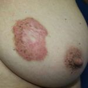

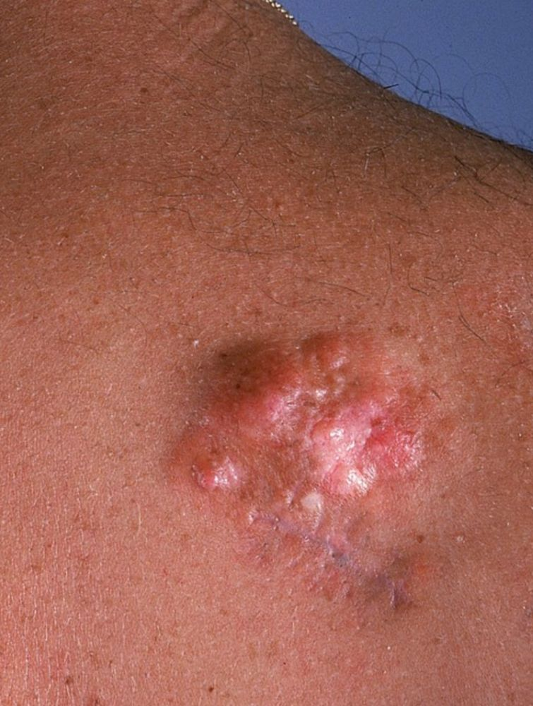

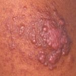

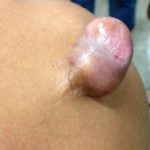

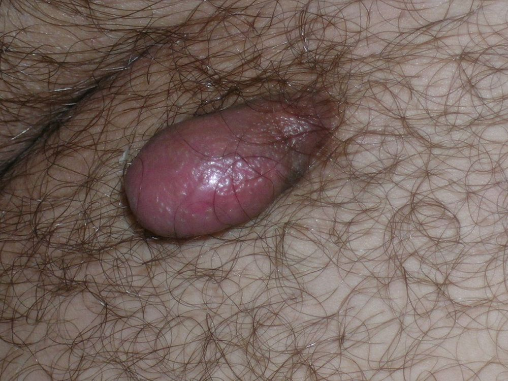

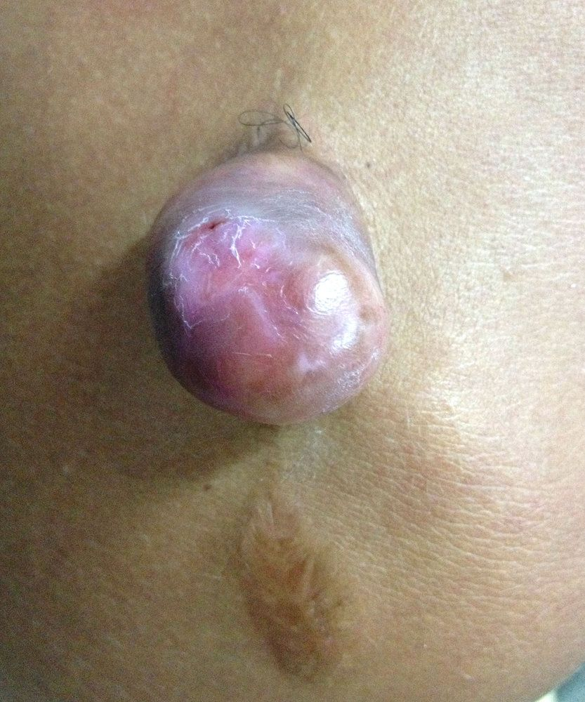

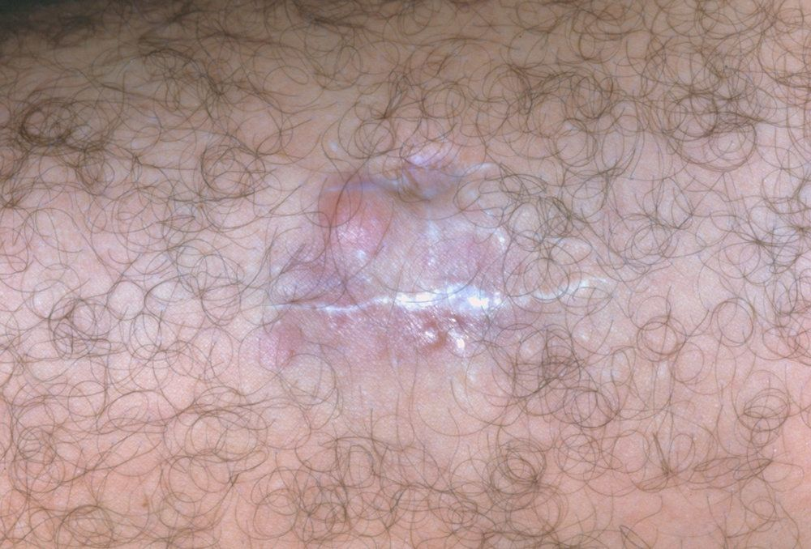

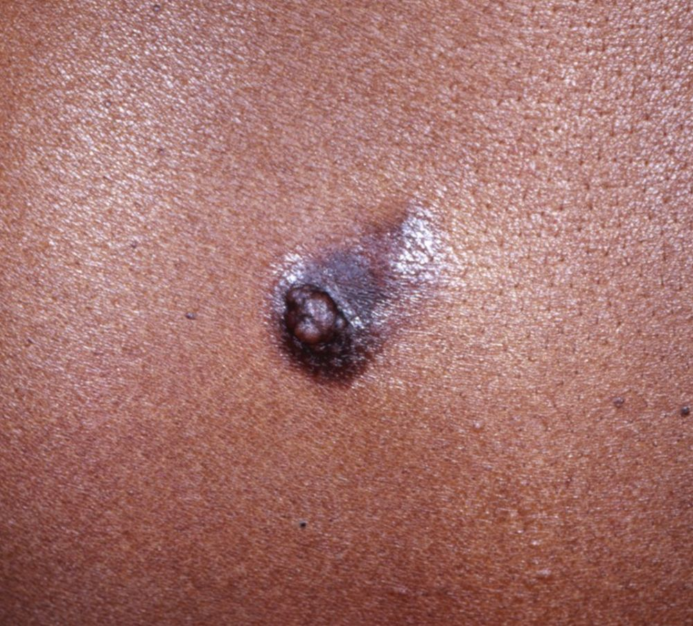

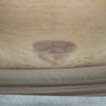

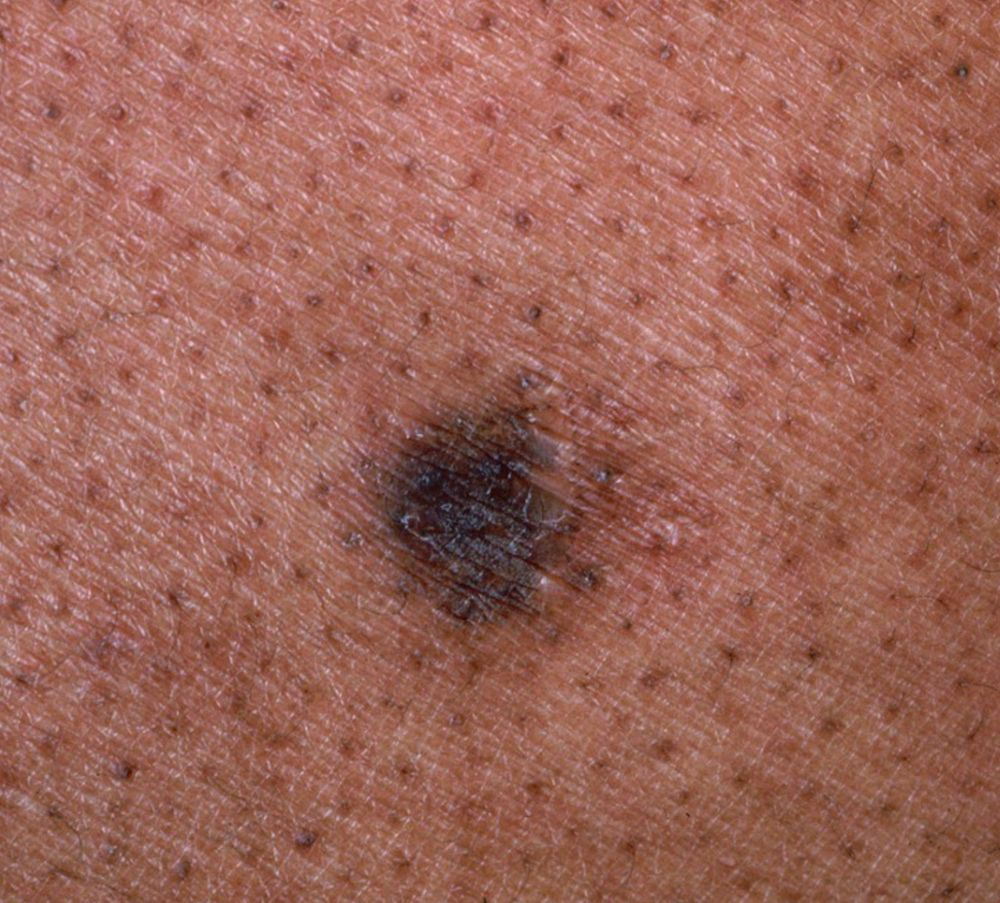

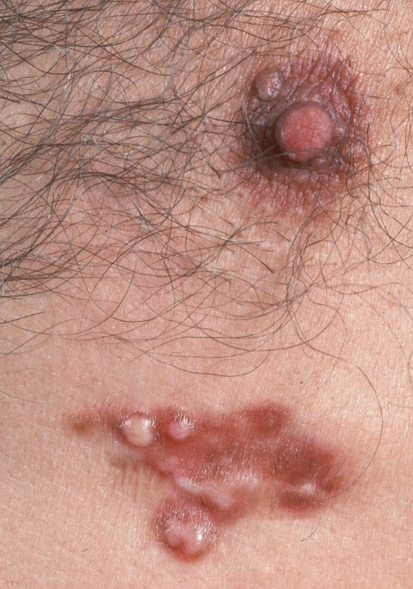


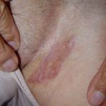

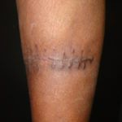

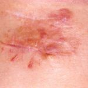
Na Skin Prime
Como podemos ajudar
Entre os recursos citados para Dermatofibrossarcoma Protuberans, estes estão disponíveis na clínica:
Tratamentos
Diagnóstico